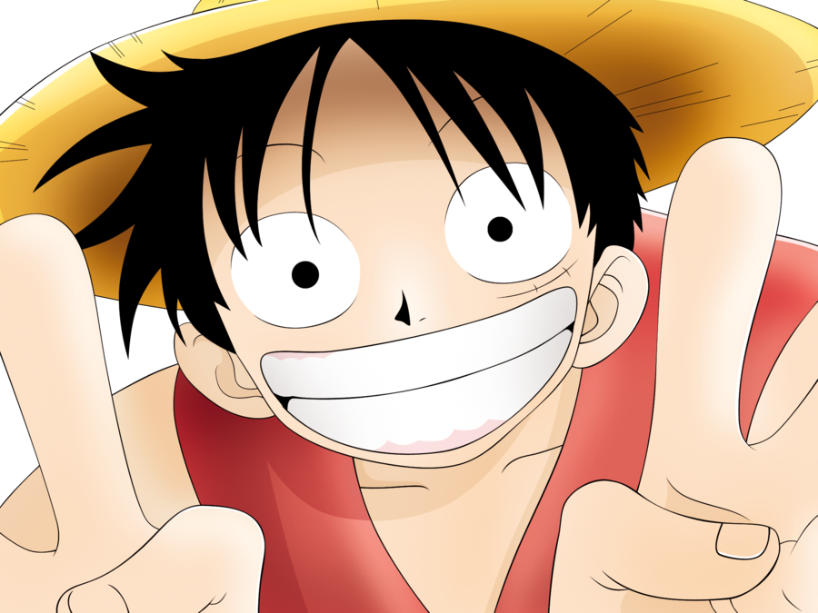
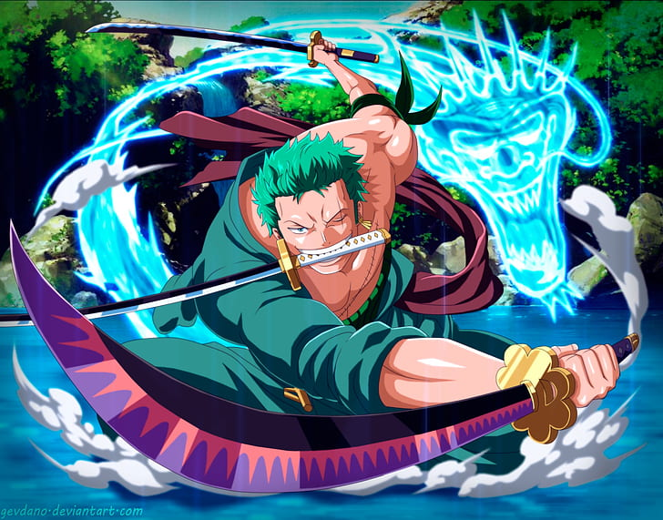
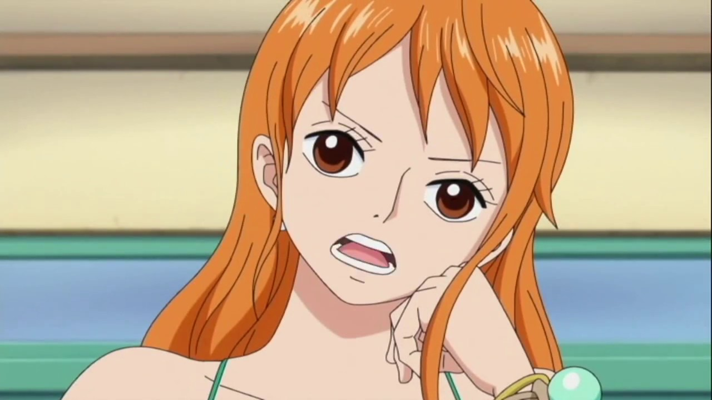
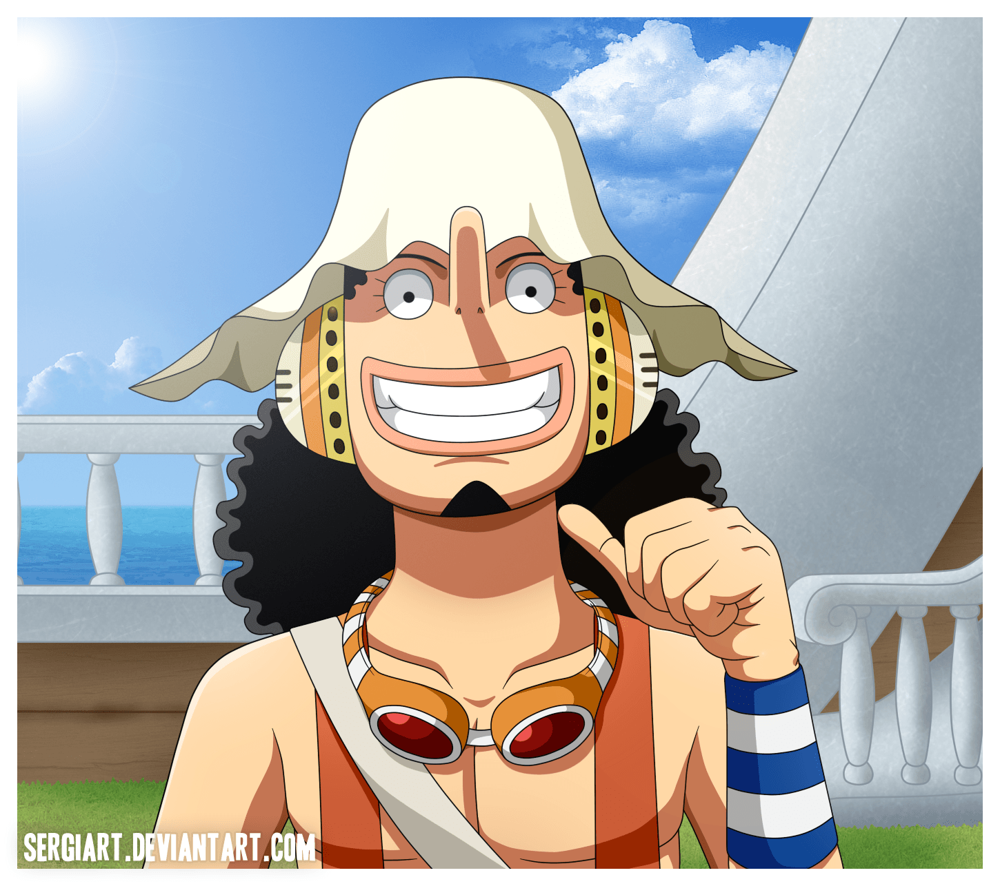
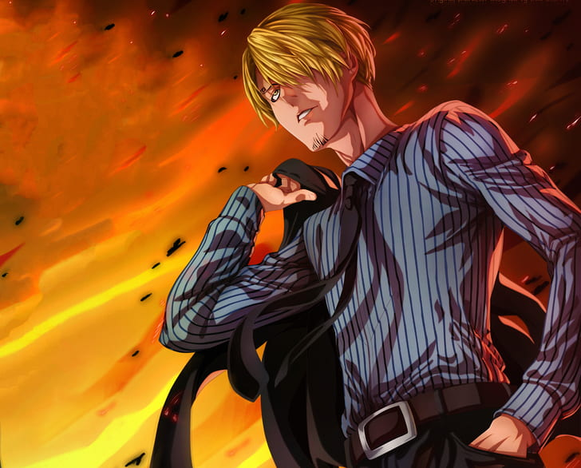

Monkey D. Luffy, also known as "Straw Hat Luffy" and commonly as "Straw Hat",[7] is the main protagonist of the manga and anime, One Piece. He is the founder and captain of the increasingly infamous and powerful Straw Hat Pirates, as well as one of its top fighters.[24] His lifelong dream is to become the Pirate King by finding the legendary treasure left behind by the late Gol D. Roger.[25] He believes that being Pirate King means having the most freedom in the world.[26]

Roronoa Zoro,[1] also known as "Pirate Hunter" Zoro,[8] is the combatant of the Straw Hat Pirates, and one of their two swordsmen. Formerly a bounty hunter,[5] he is the second member of the crew and the first to join, doing so in the Romance Dawn Arc.[3]
As a master of Santoryu, a swordsmanship style which he created during his childhood training in Shimotsuki Village, Zoro is among the four most powerful combatants of the Straw Hats, alongside Luffy, Sanji and Jinbe.[20][21] His dream is to become the greatest swordsman in the world, in order to honor a promise he made to his deceased childhood friend Kuina.[22]
In addition to his infamy as one of the Straw Hats and as a former bounty hunter, Zoro is also regarded as one of twelve pirates who are referred to as the "Worst Generation".[23]
He currently has a bounty of Beli.png320,000,000.[17]

"Cat Burglar" Nami[6] is the navigator of the Straw Hat Pirates. She is the third member of the crew and the second to join, doing so during the Orange Town Arc.[20] She is the adoptive sister of Nojiko after the two were orphaned and taken in by Bell-mère.
She was formerly a member of the Arlong Pirates and initially joined the Straw Hats so that she could rob them in order to buy back her village from Arlong. However, she legitimately joined the Straw Hats after they rebelled against and defeated Arlong. Her dream is to make a map of the entire world.[21]
She currently has a bounty of Beli.png66,000,000.[18]

"God" Usopp is the sniper of the Straw Hat Pirates. He is the fourth member of the crew and the third to join, doing so at the end of the Syrup Village Arc. Although he left the crew during the Water 7 Arc, he rejoined at the end of the Post-Enies Lobby Arc.[17]
Usopp is the son of Yasopp and Banchina. He was born and raised in Syrup Village, serving as "captain" of the Usopp Pirates and being Kaya's close friend. After working with the Straw Hats to defeat Kuro and the Black Cat Pirates, he was invited to join the crew. Despite his normal cowardice, Usopp dreams of becoming a brave warrior of the sea just like his father and lives every day in pursuit of living up to this dream.
He currently has a bounty of Beli.png200,000,000.[15]

"Black Leg" Sanji,[6] born as Vinsmoke Sanji,[24][25][26] is the cook of the Straw Hat Pirates. He is the fifth member of the crew and the fourth to join, doing so at the end of the Baratie Arc.
Born as the third son and fourth child of the Vinsmoke Family[27] (thus making him a prince of the Germa Kingdom), he disowned his family twice, once in his youth and again after reuniting with them as an adult.[28] After fleeing the Vinsmokes as a child, he eventually entered the care of Zeff as the sous chef of the Baratie, where he would remain until he met Luffy, who convinced him to join his crew.
His dream is to find the rumored chef's paradise, All Blue, which is where East Blue, West Blue, North Blue, and South Blue meet, along with their wildlife. He is one of the top four fighters of the Straw Hats, alongside Luffy, Zoro, and Jinbe.
He currently has a bounty of Beli.png330,000,000, the third-highest in the crew after Luffy and Jinbe.[29] Despite renouncing his surname Vinsmoke,[25] the World Government labels it as part of his name on his wanted poster.[26]